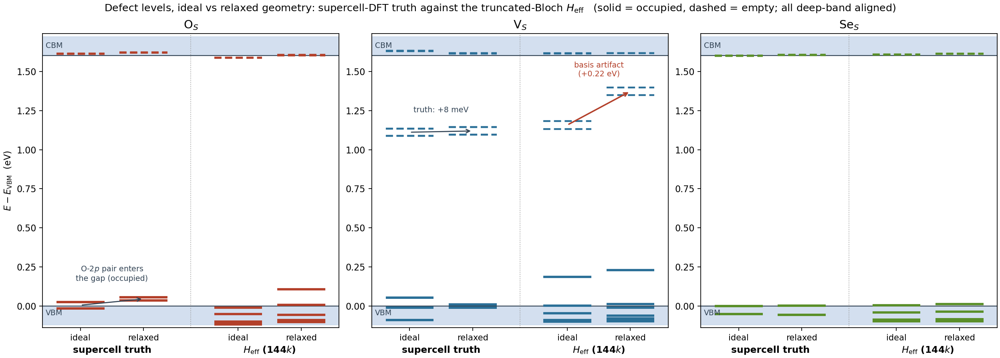
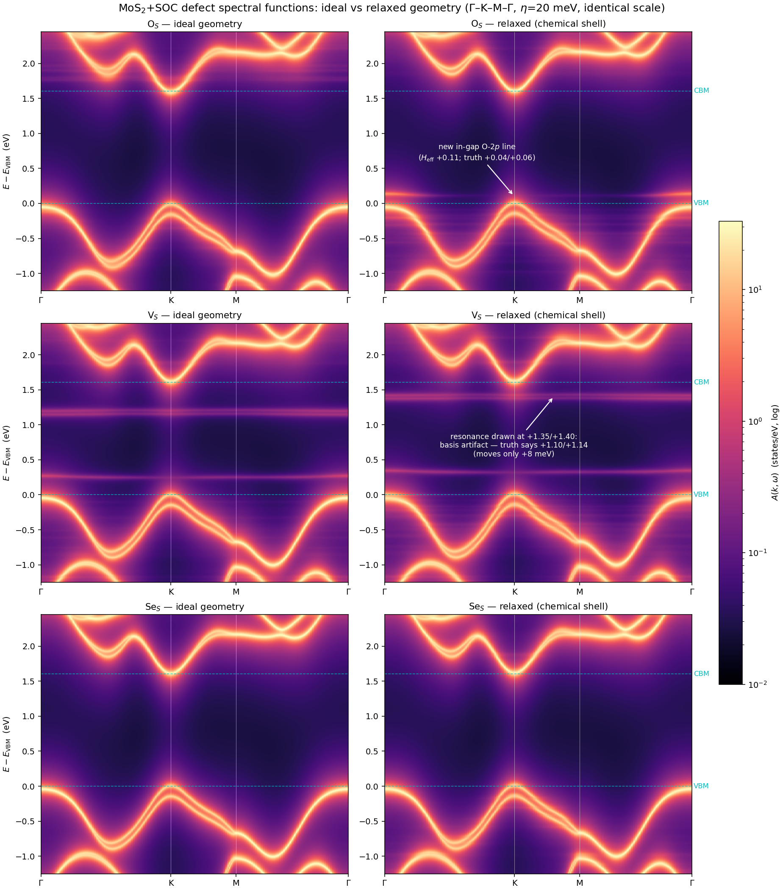

1 · Setup: the chemical-shell constraint
The relaxation set is defined by neighbour shells of the defect site, not by a radius picked per defect. Around an S site the shells are: 3 Mo at 2.413 Å, then a near-degenerate S cage — the cross-layer S at 3.126 Å and six in-plane S at 3.185 Å, only 0.06 Å apart — and a clean 0.8 Å gap before the next shell. The chemical-shell convention frees the defect atom + Mo triangle + the whole S cage: 11 atoms for O$_S$/Se$_S$, 10 for V$_S$ (97 frozen via if_pos 0 0 0). The cell is strictly fixed — the supercell lattice must remain exactly 6× the primitive for the $\Delta V$ folding and FFT commensurability, so calculation='relax', never vc-relax.
Geometry is produced scalar-relativistically (SR SG15 v1.0 partners of the campaign's FR-1.0 pseudos, 100 Ry, $\Gamma$; forces are insensitive to SOC) and the electronic chain then reruns fully relativistically at the relaxed coordinates with the original campaign inputs — the only changed lines in the SOC SCF are the 108 coordinate rows. BFGS converges in 14–16 steps for all three. One honesty number: at convergence the largest force on a frozen atom is 0.008 Ry/au (the shell-4 Mo triangle) — that is the price of the truncation, identical across defects by construction.
2 · Three defects, three relaxation patterns
| O$_S$ | Se$_S$ | V$_S$ | |
|---|---|---|---|
| relaxation energy | 1.481 eV | 0.274 eV | 0.118 eV |
| defect-atom motion | −0.533 Å (sinks toward the Mo plane) | +0.186 Å (pops outward) | — (vacancy) |
| bond, 2.413 Å → | Mo–O 2.070 Å (molybdenum-oxide range) | Mo–Se 2.542 Å (= the MoSe$_2$ bond) | Mo triangle contracts radially by only 0.008 Å |
| cross-layer S | −0.148 Å | +0.043 Å | −0.052 Å |
| symmetry | C$_{3v}$ exact in all three (equal-magnitude Mo and S displacements to 4 decimals; defect motion purely axial) | ||
The strongest sanity check is chemical: the relaxed bond lengths land on the natural values of the parent compounds — Mo–O at 2.07 Å and Mo–Se at 2.54 Å, neither of which was put in by hand. Oxygen sinks (small atom, short bond), selenium pops out (large atom), the vacancy's neighbours barely move. Note also what the table does not imply: relaxation energy is a poor predictor of level shifts, as §4 shows — the 0.118 eV V$_S$ relaxation moves its deep levels by 8 meV, while the methods-layer artifact it triggers is 30× larger.
3 · The rerun chain, and two operational notes
Per defect: relaxed-geometry SOC SCF (1.5 h, identical cost to ideal) → extract_pot → EDI direct $144\times144$ (v8, single node + OpenMP) → 21312/20160-dim $H_{\rm eff}$ diagonalization + full-window spectral function → supercell truth gate. Two notes worth recording:
- Pipeline integrity gate for free:
extract_potwrites the pristine potential alongside the defect one; since the pristine supercell is untouched by the defect relaxation, its cube must be byte-identical to the campaign original — and is (matching md5 for all three defects). A silent geometry or grid inconsistency anywhere upstream would break this. - The Banff single-node boundary, pinned: the SOC case needs a fixed $\sim$320 GiB of per-$k$ wavefunction cache regardless of layout, so a 375 GiB Banff node admits exactly one configuration — 4 MPI ranks × 56 OpenMP threads (NUMA-clean, 2 ranks/socket). Measured: MaxRSS 369.5/375 GiB (98.5%), 3136 s, no OOM; 6+ ranks provably cannot fit. The same run takes 1600–1750 s on one Anvil highmem node at 48×2 (more pools, better thread efficiency) — pools beat threads whenever memory allows.
4 · Physics layer (by the truth gate): one qualitative change, two null results
The arbiter is the same one used throughout this site: defect-supercell $\Gamma$ eigenvalues against the pristine supercell, deep-band aligned, computed with one script at both geometries so the two columns are strictly comparable.

| defect | truth, ideal → relaxed | verdict on published (ideal-geometry) results |
|---|---|---|
| O$_S$ | O-2$p$ Kramers pair at $-0.016/+0.024$ eV (straddling the VBM) → $+0.036/+0.055$ eV, both inside the gap, occupied (SOC splitting 19 meV); the CBM-edge resonance stays above the edge (+12 → +18/+21 meV) | Amended: "gap empty" was an ideal-geometry statement — relaxation pushes the O-2$p$ pair into the gap as genuine shallow occupied levels. The "conduction-edge resonance, not a bound state" verdict survives unchanged. |
| V$_S$ | empty $e$ pair $+1.088/+1.136$ → $+1.096/+1.144$ eV (+8 meV); SOC splitting 47.6 → 48.7 meV; $a_1$ drops to the VBM edge | Stands. The deep levels are insensitive to the (small) vacancy relaxation. |
| Se$_S$ | gap empty → gap empty; edge states move ≤10 meV | Stands. Fully insensitive, despite the 0.19 Å Se pop-out. |
The O$_S$ mechanism is transparent: with the oxygen sunk 0.53 Å and the Mo–O bonds shortened to 2.07 Å, the antibonding O-2$p$ combination is pushed up — from just under the VBM into the gap. Relaxation energy, meanwhile, predicts none of this ordering: Se$_S$ relaxes twice as strongly as V$_S$ and its levels move the least.
5 · Methods layer: distorted geometries inflate the push-up — and the truth gate catches it
The relaxed-geometry $H_{\rm eff}$ (pristine Bloch basis + $\tilde\chi$, exactly the production method) was run in parallel with the truth. At ideal geometry its known systematic error is the +45 meV-class common mode. At relaxed geometry that error inflates:
| level | truth shift (ideal→relaxed) | $H_{\rm eff}$ shift | $H_{\rm eff}$ overshoot vs truth: ideal → relaxed |
|---|---|---|---|
| V$_S$ $e$ pair | +8 meV | +216 meV | +45 → +255 meV |
| V$_S$ $a_1$ | −44 meV (to the edge) | +45 meV | +133 → +222 meV |
| O$_S$ O-2$p$ pair | +51/+31 meV | edge→+0.106 eV, splitting distorted | ±few → +50–70 meV |
| Se$_S$ (all) | ≤10 meV | 4–7 meV | unchanged |
The mechanism is the same one that runs through the augmentation page: the basis is the ideal-crystal Bloch set, and a distorted defect environment moves the true wavefunctions away from its span, so the Ritz values are pushed up. The ranking is exactly the vulnerability ranking established there — the vacancy is worst (its dangling-bond states have no augmentation orbital to adapt with; even 0.065 Å of neighbour motion costs +0.2 eV of representability), O$_S$ intermediate (its $\tilde\chi$ sits at the relaxed site, but the host bands don't know about the distortion), Se$_S$ immune (its states are host-like). Two practical consequences:
- The standing rule did its job. "Supercell truth arbitrates all mid-gap claims" is what kept the +0.22 eV V$_S$ phantom out of the physics layer of this page. An $H_{\rm eff}$-only relaxation study would have published it.
- Relaxed geometries need basis adaptation before the $T$-matrix numbers can be trusted quantitatively. Candidate cures, in the spirit of A1: displaced-atom $\tilde\chi$ for the shell atoms (Mo/S at their relaxed sites), or a vacancy-site $\tilde\chi$ built from the removed atom's orbitals — the same construction that was proposed for the PAW vacancy disease.
6 · Spectral functions, ideal vs relaxed

These maps inherit the $H_{\rm eff}$ vertex, so they carry its relaxed-geometry biases — the annotations state where each feature actually belongs per the truth gate. The qualitative content survives the caveat: O$_S$ gains an in-gap flat line, V$_S$ keeps one resonance and its SOC splitting, Se$_S$ changes nothing.
7 · Bottom line
Artifacts: relax inputs/outputs ~/mos2_soc/relax_{OS,VS,SeS}/; relaxed SOC SCFs sc_rlx/; relaxed cubes + EDI bins + spectra edi_rlx/ (Banff) and mos2_rlx/ (Anvil); truth gate edi_rlx/truth_levels.json (same-script, both geometries); figures post/plot_rlx_levels.py, post/plot_rlx_spectral.py. Ideal-geometry baselines are the campaign originals throughout.